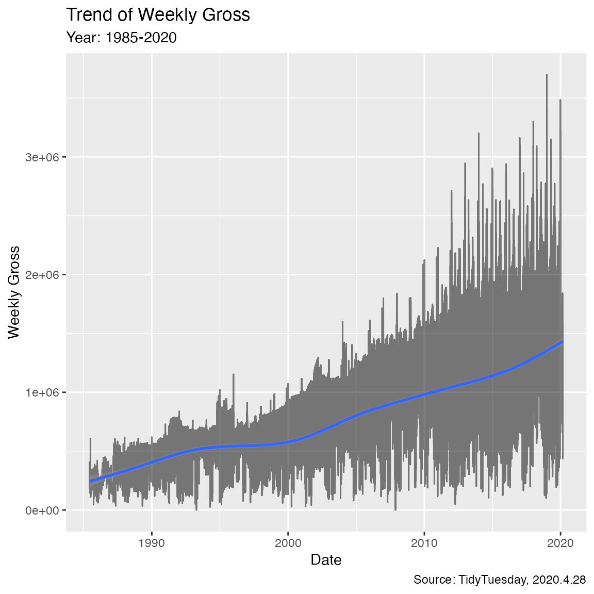
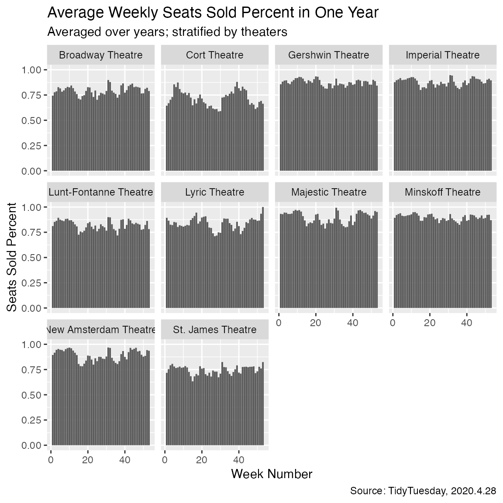
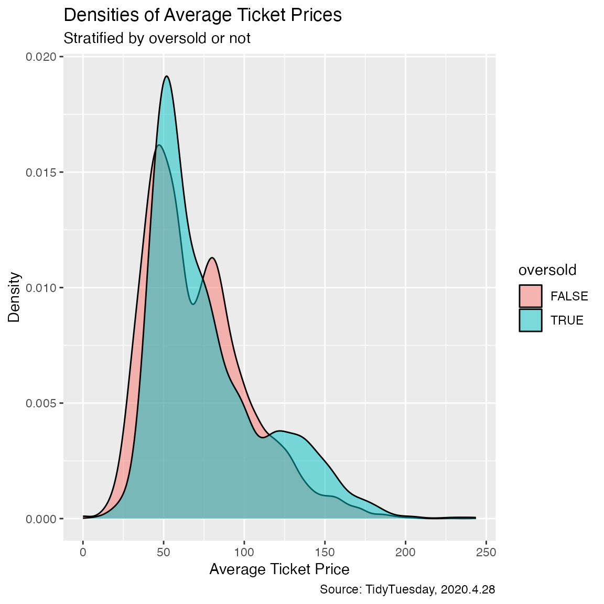

Example Analysis
Example_Analysis.Rmd
library(tidyverse)
#> ── Attaching core tidyverse packages ──────────────────────── tidyverse 2.0.0 ──
#> ✔ dplyr 1.1.2 ✔ readr 2.1.4
#> ✔ forcats 1.0.0 ✔ stringr 1.5.0
#> ✔ ggplot2 3.4.2 ✔ tibble 3.2.1
#> ✔ lubridate 1.9.2 ✔ tidyr 1.3.0
#> ✔ purrr 1.0.1
#> ── Conflicts ────────────────────────────────────────── tidyverse_conflicts() ──
#> ✖ dplyr::filter() masks stats::filter()
#> ✖ dplyr::lag() masks stats::lag()
#> ℹ Use the conflicted package (<http://conflicted.r-lib.org/>) to force all conflicts to become errors
library(hiperGLM)
library(lubridate)
library(purrr)1. Introduction
Through this analysis, we use one dataset from TidyTuesday to
demonstrate some of the functions in the package hiperGLM.
This dataset
is about Broadway weekly grosses, including show titles, theaters,
grosses, ticket prices, seat capacities and number of performances. We
want to explore what factors could influence the percent of seats
sold.
data_url = "https://raw.githubusercontent.com/rfordatascience/tidytuesday/master/data/2020/2020-04-28/grosses.csv"
filepath ="../data/grosses.csv"
if (!dir.exists("../data")) dir.create("../data")
if (!file.exists(filepath)) {
data = read.csv(data_url)
write.csv(data, file = filepath)
}
data_raw = read.csv(filepath)2. Data Processing
For the sake of simplicity, we only look at the top ten biggest
theaters (selected using current day seat numbers). And we define an
oversold variable when standing tickets are sold (seats
sold percent greater than 1), which implies an exceptionally successful
week of shows.
data = data_raw %>%
select(week_ending, week_number, show, theatre, weekly_gross, avg_ticket_price, seats_in_theatre, pct_capacity) %>%
mutate(week_ending = ymd(week_ending))
theaters_seats = data %>%
group_by(theatre) %>%
summarise(seats = max(seats_in_theatre), date = max(week_ending)) %>%
arrange(desc(date), desc(seats))
data = data %>%
filter(theatre %in% theaters_seats$theatre[1:10])
data$pct_capacity = map_vec(data$pct_capacity, as.numeric)
data$oversold = map_lgl(data$pct_capacity, function(x) x>1)3. Exploratory Analysis
data %>% ggplot(aes(x = week_ending, y = weekly_gross)) +
geom_line(size = 0.5, alpha = 0.5) +
geom_smooth() +
labs(x = "Date", y = "Weekly Gross", title = "Trend of Weekly Gross",
subtitle = "Year: 1985-2020", caption = "Source: TidyTuesday, 2020.4.28")
#> Warning: Using `size` aesthetic for lines was deprecated in ggplot2 3.4.0.
#> ℹ Please use `linewidth` instead.
#> This warning is displayed once every 8 hours.
#> Call `lifecycle::last_lifecycle_warnings()` to see where this warning was
#> generated.
#> `geom_smooth()` using method = 'gam' and formula = 'y ~ s(x, bs = "cs")'
data %>%
group_by(theatre, week_number) %>%
summarise(avg_pct_capacity = mean(pct_capacity)) %>%
ggplot(aes(x = week_number, y = avg_pct_capacity)) +
geom_bar(stat = "identity") +
facet_wrap(.~theatre) +
labs(x = "Week Number", y = "Seats Sold Percent", title = "Average Weekly Seats Sold Percent in One Year",
subtitle = "Averaged over years; stratified by theaters", caption = "Source: TidyTuesday, 2020.4.28")
#> `summarise()` has grouped output by 'theatre'. You can override using the
#> `.groups` argument.
data %>% ggplot(aes(x = avg_ticket_price)) +
geom_density(aes(fill = oversold), alpha = 0.5) +
labs(x = "Average Ticket Price", y = "Density", title = "Densities of Average Ticket Prices",
subtitle = "Stratified by oversold or not", caption = "Source: TidyTuesday, 2020.4.28")
4. Regression Analysis
4.1 Linear model
X = model.matrix(pct_capacity ~ week_ending + week_number + avg_ticket_price, data = data)
hglm_linear = hiper_glm(X, data$pct_capacity, model = "linear", option = list(mle_finder = "pseudo_inv"))
coef(hglm_linear)
#> [1] 8.448418e-01 -2.434307e-05 -2.150271e-05 4.263345e-03
summary(lm(pct_capacity ~ week_ending + week_number + avg_ticket_price, data = data))
#>
#> Call:
#> lm(formula = pct_capacity ~ week_ending + week_number + avg_ticket_price,
#> data = data)
#>
#> Residuals:
#> Min 1Q Median 3Q Max
#> -1.15262 -0.08106 0.02273 0.10804 0.88851
#>
#> Coefficients:
#> Estimate Std. Error t value Pr(>|t|)
#> (Intercept) 8.448e-01 5.233e-03 161.449 <2e-16 ***
#> week_ending -2.434e-05 5.799e-07 -41.978 <2e-16 ***
#> week_number -2.150e-05 8.253e-05 -0.261 0.794
#> avg_ticket_price 4.263e-03 6.461e-05 65.988 <2e-16 ***
#> ---
#> Signif. codes: 0 '***' 0.001 '**' 0.01 '*' 0.05 '.' 0.1 ' ' 1
#>
#> Residual standard error: 0.1389 on 12353 degrees of freedom
#> Multiple R-squared: 0.2742, Adjusted R-squared: 0.274
#> F-statistic: 1556 on 3 and 12353 DF, p-value: < 2.2e-164.2 Logit model
hglm_logit = hiper_glm(X, data$oversold, model = "logit", option = list(mle_finder = "newton"))
coef(hglm_logit)
#> [1] 0.3175848006 -0.0004899287 -0.0017693175 0.0468673263
summary(glm(oversold ~ week_ending + week_number + avg_ticket_price, family = "binomial", data = data))
#>
#> Call:
#> glm(formula = oversold ~ week_ending + week_number + avg_ticket_price,
#> family = "binomial", data = data)
#>
#> Coefficients:
#> Estimate Std. Error z value Pr(>|z|)
#> (Intercept) 0.3175848 0.1275498 2.490 0.0128 *
#> week_ending -0.0004899 0.0000187 -26.205 <2e-16 ***
#> week_number -0.0017693 0.0020387 -0.868 0.3855
#> avg_ticket_price 0.0468673 0.0017670 26.524 <2e-16 ***
#> ---
#> Signif. codes: 0 '***' 0.001 '**' 0.01 '*' 0.05 '.' 0.1 ' ' 1
#>
#> (Dispersion parameter for binomial family taken to be 1)
#>
#> Null deviance: 8283.0 on 12356 degrees of freedom
#> Residual deviance: 7331.4 on 12353 degrees of freedom
#> AIC: 7339.4
#>
#> Number of Fisher Scoring iterations: 65. Conclusion
From the plots we don’t see significant relations between seats sold
percent and week number or average ticket price. Through regression,
however, week_ending(date) and average ticket price are
significant explanatory variables: the older the show and the higher the
price, the higher the seats sold percent. We resort to lm
and glm for p values because inference has not been
implemented in the hiperGLM package.